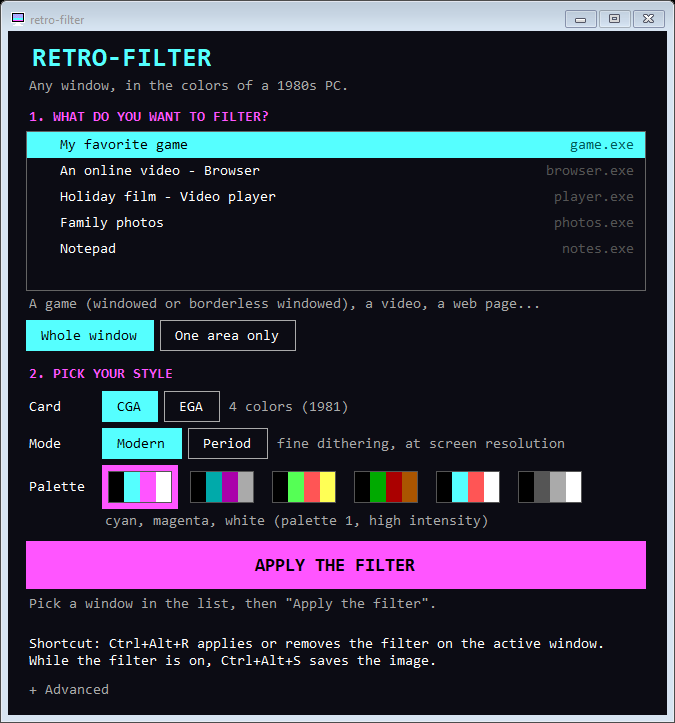

Try it here
Drag the bar to compare, then switch card, mode and palette, just like in the app. The images come from the app itself.
What it does
-
Nothing to install in the game
The filter sits on top of the window. It changes nothing and injects nothing into the program you filter.
-
Play as usual
The window keeps the keyboard and the mouse: clicks go straight through the filter.
-
Whole window or one area
Draw a rectangle with the mouse to filter only the video on a web page, without the tabs or the comments.
-
Fast
The work is done on the graphics card: 1 to 4 milliseconds per frame at 1920×1080.
-
Private
No network access. The images stay on your machine.
-
Free and open source
MIT license: the source code is open to anyone who wants to read it or reuse it.
How to use it
-
Open what you want to filter
For a game, pick windowed or borderless windowed mode in its display options.
-
Pick the window and the style
The window in the list, then the card, the mode and the palette. The swatches show the colors.
-
Apply the filter
Click the big Apply the filter button, or press Ctrl+Alt+R in the window to filter. The same shortcut removes it.

Get it
retro-filter is a working prototype. There is no ready-made download yet: you build it from the source code, with the .NET 8 SDK.
git clone https://github.com/sebjvproj/retro-filtercd retro-filter\src\RetroFilterdotnet build
Source code on GitHub Read the full instructions
- You need Windows 10 or 11 and a graphics card that supports Direct3D 11.
- A game in exclusive fullscreen cannot be filtered: switch it to borderless windowed.
- Protected videos from paid streaming services come out black.